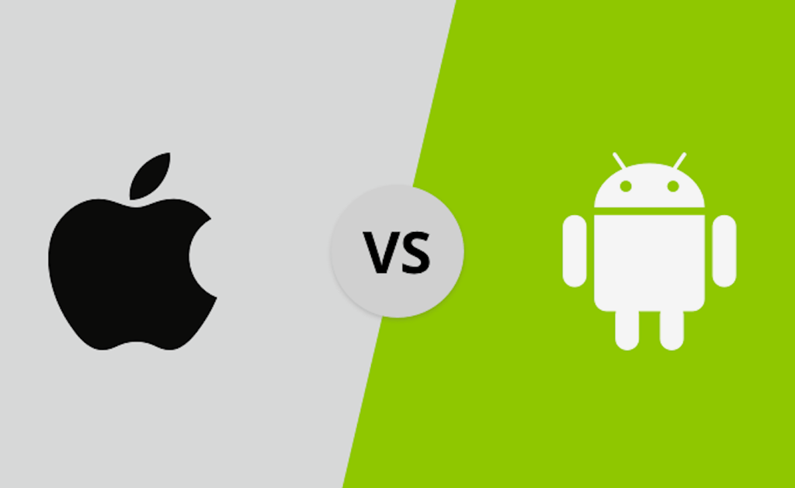

iPhone Vs Android: Reasons to pick the iPhone over Android
With so many benefits of iPhones over Android, it can be easily understood why iPhones are preferred more over Android device when it comes to recommending someone which phone to buy. iPhone provides much better technical support and also you can update the latest iOS much more easily than in Android phones.
We all love Android Phones due to a variety of hardware and software customization options. But when someone will ask, what phone to buy, we will recommend the iPhone over Android. The reason to go the Apple route is not just the platform, it’s how the software and hardware complement each other. The iPhone works smoothly with other Apple gadgets also including Macs and the Apple Watch means there is an ecosystem factor also. Now we will give you reasons why the iPhone is recommended over Android
iPhone is faster than Android based phones
There have been some tests and comparisons of iPhone 7 plus with Galaxy S8 which is Android based. Samsung Galaxy S8 uses Qualcomm Snapdragon 835 chip. In tests, iPhone takes a lead once it starts to open apps that are stored in the background. And the faster iPhone 8 will be even faster. Apple’s iPhone is leading because of better hardware and software integration and controlling both sides of the equation. Even if you hire experts for Android app development to build an app for your business but what is the benefit if it will lag in speed and performance in comparison with an iPhone app.
Better Integration of Hardware and Software in iPhone
The iPhone 7’s 3D Touch display is smart enough to sense the pressure and allows you to take quick actions from the home screen by long pressing on an app icon. You can open that email just by tapping on it in your inbox lightly. Android phones have offered haptic feedback but Taptic engine in the new iPhones is very efficient. On iPhone 7, the home button also takes advantage of the Taptic engine and it doesn’t physically depress. This also prevents the link from getting underneath the button. You can also adjust the sensitivity level yourself.
iPhone is most user-friendly phone
Although Android phone makers try hard to streamline their skins iPhone remains the easiest phone to use till now. Some people say that look and feel of iOS has not changed over the years but that's actually a plus as it works pretty much in the same way as it did in 2007. Just pick it up, turn it on and touch the app you want to open. Although Apple has made enhancements over the years like Siri and Control Center yet the iPhone is still very easy to learn. With iOS 10, Siri and iMessage are now open to developers and there are many customizable widgets available for the today screen.
You can update iOS in iPhone whenever you want
This is a major factor why iPhone wins over Android. A Recent report says that about 80 percent of iOS devices were running iOS 10, the latest version of Apple’s OS while Google reported that Android Nougat was on a merely 4.9% of the Android devices and majority of Android users are still using the older versions of Android OS. If you leave the pure Android phones like the Pixel, the Samsung, HTC, Lenovo etc have to do much more to bring you the latest version of Google’s OS. All iPhone owners can update to the latest version of iOS on day 1. This difference is not going to change very soon.